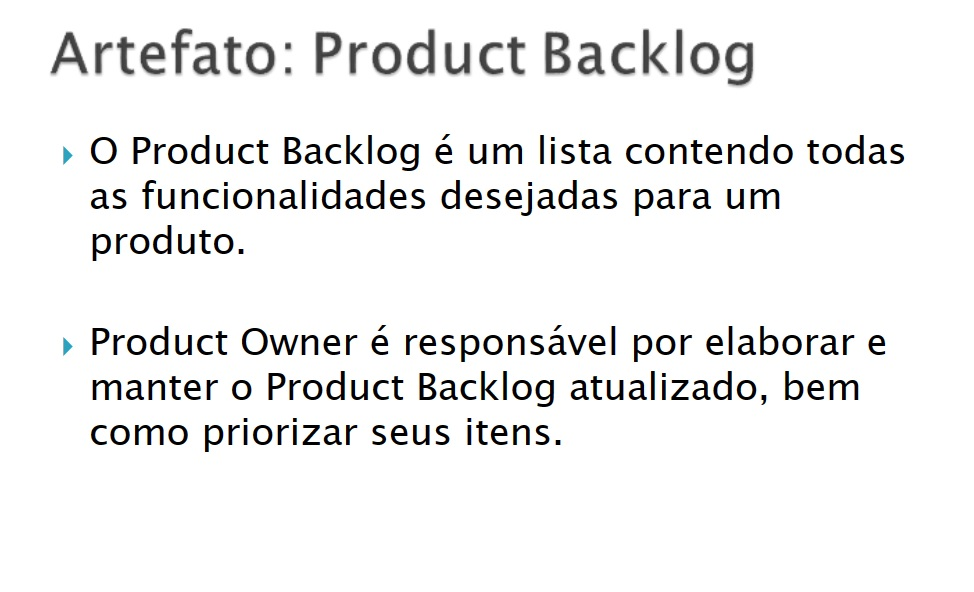
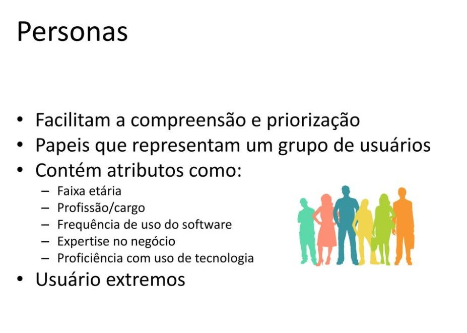

O Scrum é um framework ágil de desenvolvimento de projetos que se concentra na colaboração, flexibilidade e entrega incremental de produtos. Ele visa permitir que equipes desenvolvam soluções complexas de maneira adaptativa, respondendo a mudanças e priorizando a entrega contínua de valor para o cliente. O Scrum é amplamente usado na indústria de software, mas suas práticas e princípios podem ser aplicados em diversos contextos.
Componentes Principais do Scrum
Product Owner (Dono do Produto)
O Product Owner é responsável por definir as prioridades do produto, gerenciar o backlog do produto (lista de requisitos) e garantir que a equipe de desenvolvimento esteja trabalhando nas funcionalidades mais valiosas para o cliente. Eles também são responsáveis por comunicar as necessidades dos stakeholders à equipe.
Scrum Master
O Scrum Master é um facilitador e líder de equipe. Eles ajudam a equipe a entender e adotar as práticas do Scrum, removem impedimentos que podem atrapalhar o progresso e garantem que o processo Scrum esteja sendo seguido adequadamente. O Scrum Master não é um gerente tradicional, mas sim um coach para a equipe.
Equipe de Desenvolvimento
A equipe de desenvolvimento é composta por profissionais que realizam o trabalho real de criar o produto. Eles são multifuncionais, auto-organizáveis e trabalham em conjunto para desenvolver e entregar as funcionalidades do produto. A equipe é responsável por planejar e executar as tarefas dentro de cada sprint.
Backlog do Produto (Product Backlog)
O backlog do produto é uma lista priorizada de todas as funcionalidades, melhorias e requisitos que compõem o produto. Ele é mantido pelo Product Owner e evolui à medida que novas informações são obtidas e prioridades são ajustadas. Os itens do backlog do produto são descritos em termos de histórias de usuário ou requisitos.
Reunião de Planejamento do Sprint (Sprint Planning)
Essa reunião ocorre no início de cada sprint e envolve a equipe de desenvolvimento, o Scrum Master e o Product Owner. Durante a reunião, a equipe decide quais itens do backlog do produto serão incluídos no sprint atual, com base na capacidade da equipe e nas prioridades do Product Owner.
Sprint
Um sprint é um período de tempo fixo, geralmente de 2 a 4 semanas, durante o qual a equipe de desenvolvimento trabalha para entregar um incremento de software funcional. O objetivo é criar valor mensurável ao final de cada sprint. Durante o sprint, não é permitido alterar os objetivos ou adicionar novos itens.
Reunião Diária (Daily Scrum)
Uma reunião curta realizada todos os dias para que a equipe de desenvolvimento compartilhe o que foi feito desde a última reunião, o que será feito até a próxima reunião e quaisquer obstáculos que estejam impedindo o progresso. É uma oportunidade para sincronização e resolução rápida de problemas.
Reunião de Revisão do Sprint (Sprint Review)
No final de cada sprint, a equipe realiza uma reunião de revisão para demonstrar o que foi realizado durante o sprint e coletar feedback do Product Owner e de outros stakeholders. Isso ajuda a adaptar o backlog do produto conforme necessário.
Retrospectiva do Sprint (Sprint Retrospective)
Após a reunião de revisão do sprint, a equipe realiza uma retrospectiva do sprint. Isso envolve uma reflexão sobre o que funcionou bem, o que pode ser melhorado e a identificação de ações para otimizar o processo no próximo sprint.
O Scrum é uma metodologia adaptativa, e sua estrutura permite que as equipes respondam às mudanças e melhorem continuamente. Ele promove a transparência, a colaboração e a entrega de valor constante ao cliente, resultando em uma abordagem ágil e eficaz para o desenvolvimento de projetos.
 